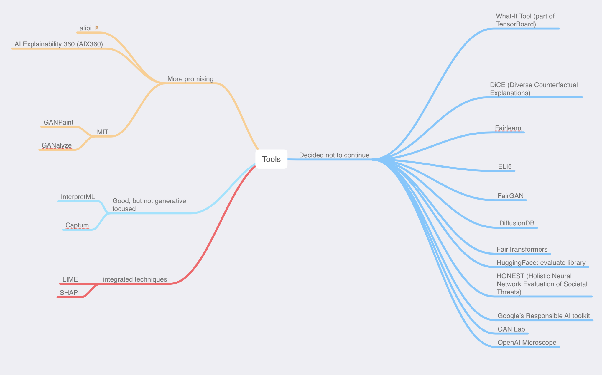

This final project is an attempt to survey the latest tools and techniques for investigating the interpretability of neural network models, specifically generative models such as Generative Adversarial Networks (GANs), Variational Autoencoders (VAEs) and Diffusion models.
Understanding the mechanisms behind generative machine learning is crucial for encouraging trust and acceptance of model outputs, understanding and limiting biases that may exist in particular trained models, and in enabling improved performance, usability, and user interaction.
The goal of this project report is to provide a survey of recent tools, techniques, and a case study aimed at capturing and improving the interpretability of a generative machine learning model.
The methodology for this survey focused on reviewing and analyzing recent developments in generative model interpretability. The focus was primarily on GANs (Generative Adversarial Networks), VAEs (Variational Autoencoders), and Diffusion Models, with particular emphasis on generation and manipulation of images.
Primary sources of data were research papers, with most available via arXiv.org. Focus was primarily on research papers published in the last 3 to 4 years since this is a rapidly evolving field. References to some of the underlying technologies were also consulted, and those have been included in the References section of the final report.
In addition to the research papers, this survey included reviewing tools and frameworks, primarily open-source projects, that provided interpretability analysis for generative models.
The tools and techniques were assessed based on (1) Support for generative models, (2) Maturity of product, (3) Ease of implementation and (4) Quality of analysis and output
Several well-designed tools were reviewed initially and not included in the final reviews because they were designed to be used with non-generative models. The tools selected to be reviewed in-depth will be detailed in the Experiments section. The goal of these reviews will be to explore the tools in the context of reviewing the model interpretability while reviewing and potentially improving the performance of the model in question.

Due to time constraints, research efforts will be focused on experimentation with a Variational Autoencoder (VAE). VAEs are particularly useful in this type of research because they learn meaningful latent representations and enable controlled generation through latent space manipulation, which allows systematic testing by isolating and modifying individual factors. This control helps map the relationship between latent representations and model outputs, making it easier for the interpretability tools being studied.
After research and testing, our research indicates that Alibi is currently our best choice tool for generative model interpretability analysis, particularly for more mature, production environments. It has a comprehensive and growing feature set, unified API design for ease of use across the available algorithms, and strong community support.
Our research uncovered advantages for both GUI and API-based approaches. While GUI tools provide immediate feedback and a lower technical barrier to entry, the API-based tools offered customizable analysis as well as more detailed analysis.
For the case study to exercise the use of interpretability analysis using the chosen toolset, Alibi Explain, a dataset was first generated using the Stable Diffusion v2.1 model with code similar to shown below. Two classes were created as part of the maritime-related dataset: boats and lighthouses
from diffusers import StableDiffusionPipeline
import torch
import os
# Model ID and loading the pipeline
# --generating with a mix of these models
#model_id = "stabilityai/sd-turbo" # good
model_id = "stabilityai/stable-diffusion-2-1" # better
#model_id = "stabilityai/sd-xl" # best, but costs $
pipe = StableDiffusionPipeline.from_pretrained(model_id)
# Check if MPS is available, if so, use it
if torch.backends.mps.is_available():
print("MPS is available, using MPS...")
pipe = pipe.to("mps")
else:
print("MPS not available, using CPU...")
pipe = pipe.to("cpu") # Fallback to CPU if MPS isn't available
# Directory to save the generated images
output_dir = "generated_images/train.orig"
os.makedirs(output_dir, exist_ok=True)
# Generate images from a text prompt
prompt = "photo realistic lighthouse"
for i in range(0,5000):
try:
result = pipe(prompt)
image = result.images[0]
image.save(os.path.join(output_dir, f"lighthouse_{i+1}.png"))
print(f"Image {i+1} generated and saved successfully.")
except Exception as e:
print(f"Error during image generation for image {i+1}: {e}")
| Train/Test | Class | Number of Images |
|---|---|---|
| Train | boat | 5000 |
| lighthouse | 5000 | |
| Test | boat | 500 |
| lighthouse | 500 |
A Variational autoencoder (VAE) was constructed for use with the proposed test case. No special features were implemented, in hopes of creating a VAE that was less than optimal. With that less-than-optimal VAE, the plan was to perform analysis of the model and how it reacted with the chosen dataset.
The VAE didn't disappoint -- its performance was not great. The output showed promise, as the image reconstructions seemed to be partially accurate, but the results were not great.
asdfasdf
asdfsdf
There's lots of interesting work going on in the area of interpretability for generative models.
Alibi Explain is an open source Python library aimed at machine learning model inspection and interpretation